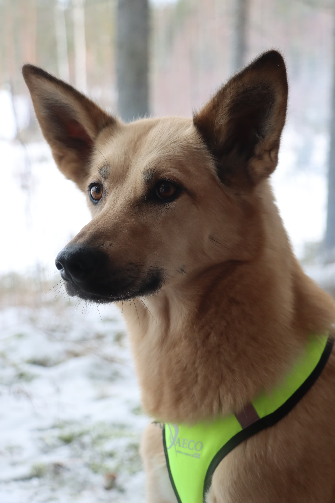

Tarinani
Pohojosesta Pohjois-Savvoon
Synnyin vuonna 2019 Bearhill Husky kenneliin Rovaniemellä. Minulla on kolme siskoa ja meidät on nimetty Spice Girlsien mukaan (jos joku ei jo arvannut, niin minä olen Ginger). Opettelin rekikoiran taitoja kennelillä, mutta en halunnut tehdä vetohommia yhdessä muiden koirien kanssa. Niinpä Bearhill Huskyn ihmiset päättivät, että ansaitsen kodin jossa minun ei tarvitse työskennellä päivittäin muiden koirien kanssa. Näin minä päädyin oman ihmiseni luokse tänne Savonmualle. Siskoni lähtivät pieneen husky kenneliin Ruotsiin. Minusta on ihanaa asua maalla oman ihmiseni kanssa. Rakastan ihmisiä ja erityisesti rapsutuksia sekä herkkuja, joita saan heiltä. Tykkään myös nykyään tehdä vetohommia yksin, kun saan olla tämän "yhden huskyn"-valjakon pomo.
Vasemmalla olevista linkeistä pääset tutustumaan alaskanhuskeihin enemmän, Bearhill Husky kenneliin sekä Stiders Adventuresin kautta siskojeni elämään.
Harrastuksiani:
- Vetohommat
- Juokseminen
- Noseworkin alkeet
- Kavereiden kanssa
painiminen - Vaeltaminen
